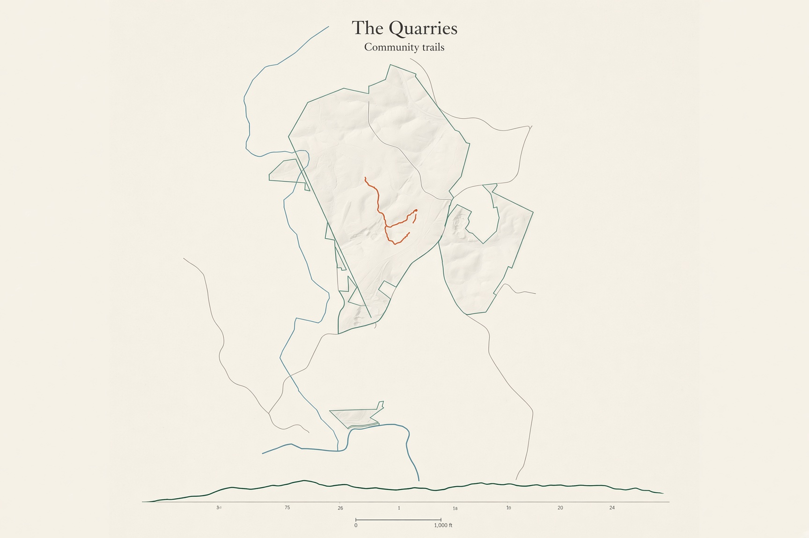
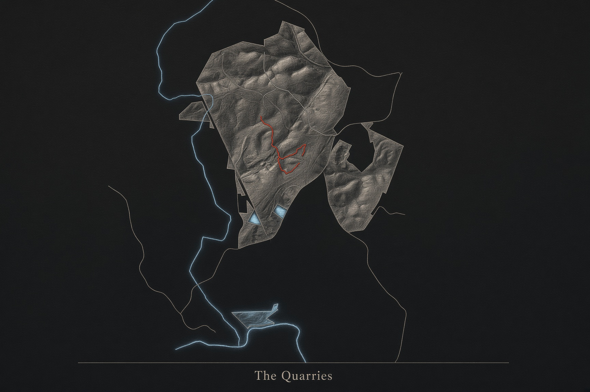
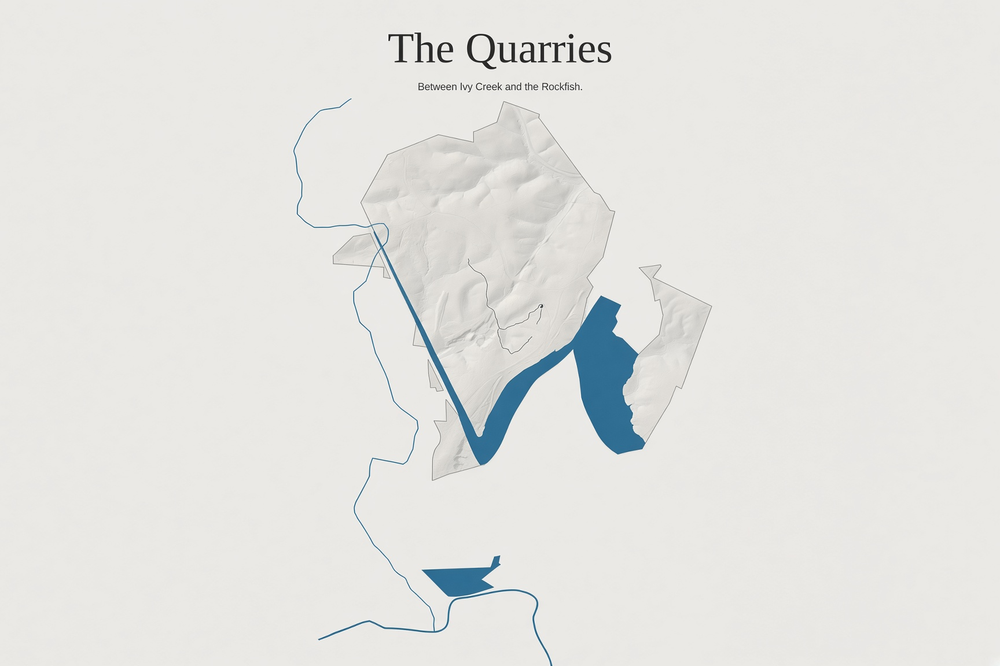
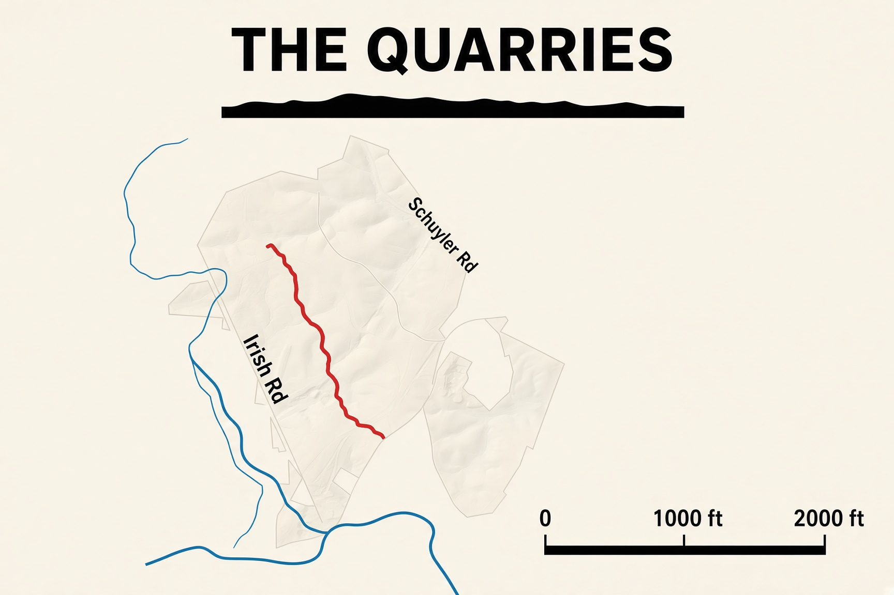
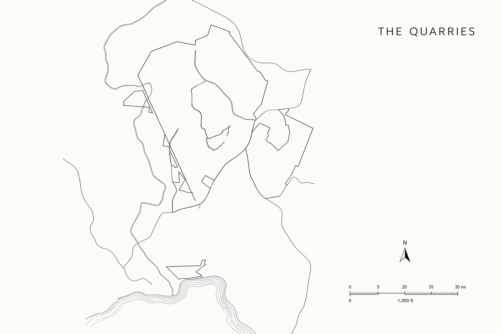

Five ways to print the Quarries
Style studies of the same land. Not a new survey.

1. The Walk.Quiet sheet. The climb is drawn along the bottom.

2. Copperplate.A dark wall map. The trail is the only bright color.

3. Between the waters.The creek and the river are the subject.

4. Field card.Thick trail, solid water, a large scale in feet.

5. The plat.Hairline ink, drawn like a survey.